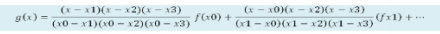
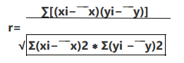
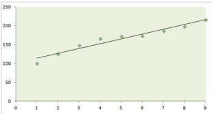
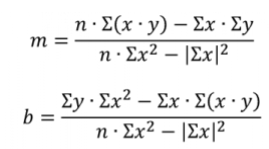

5.1 Polinomio de interpolación de Newton.
El Método de Newton es un método de interpolación polinómica, la cual es útil para casos donde se requieran pocos puntos para interpolar, puesto que el número de puntos es proporcional al grado del polinomio. Esto permite la creación de un polinomio de grado n-1, donde n es el número de datos que se tienen. La interpolación de Newton asume que no existe ruido en sus mediciones de datos, es decir, que el polinomio generado por el método pasará por todas las coordenadas insertadas al método a menos que se conozca la función original. El propósito es poder generar una función para la cual se pueda introducir todos los datos originales y obtener 0 error, pues la curva se va modelando punto a punto. Al obtener una función, se pueden crear aproximaciones y estimaciones. El método de Newton utiliza la fórmula de polinomios de Newton:
5.2 Polinomio de interpolación de Lagrange.
La interpolación permite el cálculo de valores intermedios de datos experimentales los cuales no tienen una función que los represente. El método más común para interpolar valores intermedios, es la interpolación polinomial, la cual consiste en determinar el polinomio de orden n que ajusta a n+1 datos. La interpolación de Lagrange es una de las alternativas más atractivas que existe para interpolar, debido a la facilidad de programar también es simplemente una reformulación del polinomio de Newton que evita el cálculo de las diferencias divididas. 
Esta fórmula nos dice que restamos x de todas las xn sin contar la que estamos multiplicando por f(Xn) y se dividirá la que se dejó por fuera restándole de todas las demás.
Para dejar claro esto si vemos la primera parte de la fórmula se está multiplicando por f(x0) por lo tanto no tomamos x0 en cuenta en la parte de arriba, sin embargo es la que resta a todas en la parte inferior de nuestra fórmula.
5.3 Interpolación segmentada.
Esta interpolación se llama interpolación segmentaria o interpolación por splines. La idea central es que en vez de usar un solo polinomio para interpolar los datos, podemos usar segmentos de polinomios y unirlos adecuadamente para formar nuestra interpolación.
Cabe mencionar que entre todas, las splines cúbicas han resultado ser las más adecuadas para aplicaciones como la mencionada anteriormente.
Así pues, podemos decir de manera informal, que una funcion spline está formada por varios polinomios, cada uno definido en un intervalo y que se unen entre si bajo ciertas condiciones de continuidad.
5.4 Regresión y correlación.
Correlación: El coeficiente de correlación es la medida específica que cuantifica la intensidad de la relación lineal entre dos variables en un análisis de correlación. En los informes de correlación, este coeficiente se simboliza con la r.
Para dos variables, la fórmula compara la distancia de cada dato puntual respecto a la media de la variable y utiliza esta comparación para decirnos hasta qué punto la relación entre las variables se ajusta a una línea imaginaria trazada entre los datos.
El coeficiente de correlación de la muestra puede representarse con una fórmula:

Regresión: La regresión lineal es una técnica que permite cuantificar la relación que puede ser observada cuando se grafica un diagrama de puntos dispersos correspondientes a dos variables, cuya tendencia general es rectilínea mediante una ecuación “del mejor ajuste” de la forma: Y= mX+b
Donde m y b son los parámetros de la recta: m es la pendiente de la recta y b es la ordenada al origen.
La regresión es empleada para modelos ópticos para patrones de demanda con tendencia (creciente o decreciente), es decir, patrones que presenten una relación de linealidad entre la demanda y el tiempo.

5.5 Mínimos cuadrados.
Es un procedimiento de análisis numérico en la que, dados un conjunto de datos (pares ordenados y familia de funciones), se intenta determinar la función continua que mejor se aproxime a los datos, proporcionando una demostración visual de la relación entre los puntos de los mismos.
En su forma más simple, busca minimizar la suma de cuadrados de las diferencias ordenadas (llamadas residuos) entre los puntos generados por la función y los correspondientes datos.
Este método se utiliza comúnmente para analizar una serie de datos que se obtengan de algún estudio, con el fin de expresar su comportamiento de manera lineal y así minimizar los errores de la data tomada.
Su expresión general se basa en la ecuación de una recta y = mx + b.
Donde m es la pendiente y b el punto de corte, y vienen expresadas de la siguiente manera:

5.6 Problemas de aplicación.
Se puede utilizar en el cálculo de estructuras, instalaciones eléctricas, hidráulicas y sanitarias, en cálculos de carreteras, topografía y hasta en diseño de las estructuras, no en todos los casos pero principalmente cuando hay mala toma de datos o haya datos faltantes.
En el subcampo matemático del análisis numérico, un spline es una curva diferenciable definida en porciones mediante polinomios. En los problemas de interpolación, se utiliza a menudo la interpolación mediante splines porque da lugar a resultados similares requiriendo solamente el uso de polinomios de bajo grado, evitando así las oscilaciones, indeseables en la mayoría de las aplicaciones, encontradas al interpolar mediante polinomios de grado elevado.Para el ajuste de curvas, los splines se utilizan para aproximar formas complicadas.
La simplicidad de la representación y la facilidad de cómputo de los splines los hacen populares para la representación de curvas en informática, particularmente en el terreno de los gráficos por ordenado.
Tenemos los siguientes 3:
· Interpolación Segmentaria Lineal
· Interpolación Segmentaria Cuadrática
· Interpolación Segmentaria Cúbica